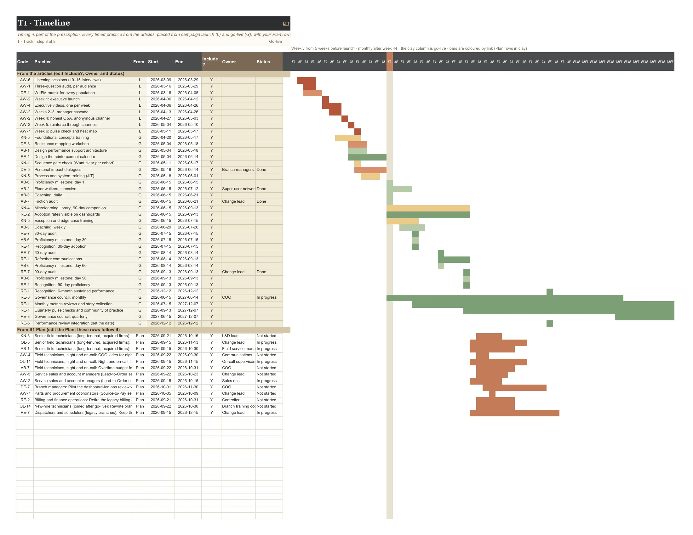

User guide · The tabs
1 tab: T1 Timeline.
Track every population, round by round, until the new way holds. Timing is part of the prescription: training lands 2–4 weeks before go-live, floor walkers stay 2–4 weeks after, and reinforcement runs 6–18 months, not 6–8 weeks. The Sweep's round-over-round columns and the Journey view carry the tracking itself.
Context (opens in a new tab): Reinforcement: The Phase That Determines Whether Change Sticks · Ability: Where Change Programs Actually Stall · Knowledge: Why Most Training Programs Are Delivered in the Wrong Order
On this page: T1 Timeline
Timing is part of the prescription. Every timed practice from the articles, placed from campaign launch (L) and go-live (G), with your Plan rows merged in. Reinforcement runs 6–18 months, not 6–8 weeks.
Every timed practice from the articles is placed from L and G automatically; switch any off with Include?, and add owners and status. Your Plan rows appear below them with their own dates.
The Gantt runs weekly from before launch, then monthly out to eighteen months, with go-live marked. Bars are coloured by link. Below it, the control plan: metric, target, the trigger that sets off a response, the response, and its owner.

| Column | Type | What it means | Values |
|---|---|---|---|
| Code | computed | ||
| Practice | computed | ||
| From | computed | ||
| Start | input | ||
| End | input | ||
| Include? | input | YN | |
| Owner | input | ||
| Status | input | Not startedIn progressDoneBlockedDropped |
What T1 Timeline places automatically. L is campaign launch, G is go-live; w = weeks, d = days, mo = months.
| Practice | What | When |
|---|---|---|
| AW-6 Listening Before Broadcasting | Listening sessions (10–15 interviews) | L−4w to L−8d |
| AW-1 Three-Question Awareness Audit | Three-question audit, per audience | L−3w to L−8d |
| DE-1 WIIFM Matrix | WIIFM matrix for every population | L−3w to L−1d |
| AW-2 Awareness Campaign Architecture | Week 1: executive launch | L to L+6d |
| AW-4 Executive Storytelling Series | Executive videos, one per week | L to L+20d |
| AW-2 Awareness Campaign Architecture | Weeks 2–3: manager cascade | L+1w to L+20d |
| AW-2 Awareness Campaign Architecture | Week 4: honest Q&A, anonymous channel | L+3w to L+27d |
| AW-2 Awareness Campaign Architecture | Week 5: reinforce through channels | L+4w to L+34d |
| AW-7 Awareness Heat Map | Week 6: pulse check and heat map | L+5w to L+41d |
| KN-5 Just-in-Time Sequencing | Foundational concepts training | G−8w to G−29d |
| DE-3 Resistance Mapping Workshop | Resistance mapping workshop | G−6w to G−4w |
| AB-1 Performance Support Architecture | Design performance support architecture | G−6w to G−4w |
| RE-1 Reinforcement Calendar | Design the reinforcement calendar | G−6w to G−1d |
| KN-1 Gate Training on Awareness and Desire | Sequence gate check (Want clear per cohort) | G−5w to G−29d |
| DE-5 Personal Impact Dialogues | Personal impact dialogues | G−30d to G−1d |
| KN-5 Just-in-Time Sequencing | Process and system training (JIT) | G−4w to G−2w |
| AB-6 Progressive Proficiency Expectations | Proficiency milestone: day 1 | G |
| AB-2 Floor Walkers / Super Users | Floor walkers, intensive | G to G+27d |
| AB-3 Coaching Plans Tied to Observation | Coaching, daily | G to G+6d |
| AB-7 Barrier Removal (Friction Audit) | Friction audit | G to G+6d |
| KN-4 Microlearning Library (90-Day Companion) | Microlearning library, 90-day companion | G to G+3 mo |
| RE-2 Update the Metrics | Adoption rates visible on dashboards | G to G+3 mo |
| KN-5 Just-in-Time Sequencing | Exception and edge-case training | G to G+30d |
| AB-3 Coaching Plans Tied to Observation | Coaching, weekly | G+2w to G+41d |
| RE-7 30-60-90 Day Audits | 30-day audit | G+30d |
| AB-6 Progressive Proficiency Expectations | Proficiency milestone: day 30 | G+30d |
| RE-1 Reinforcement Calendar | Recognition: 30-day adoption | G+30d |
| RE-7 30-60-90 Day Audits | 60-day audit | G+60d |
| RE-1 Reinforcement Calendar | Refresher communications | G+60d to G+3 mo |
| AB-6 Progressive Proficiency Expectations | Proficiency milestone: day 60 | G+60d |
| RE-7 30-60-90 Day Audits | 90-day audit | G+3 mo |
| AB-6 Progressive Proficiency Expectations | Proficiency milestone: day 90 | G+3 mo |
| RE-1 Reinforcement Calendar | Recognition: 90-day proficiency | G+3 mo |
| RE-1 Reinforcement Calendar | Recognition: 6-month sustained performance | G+6 mo |
| RE-3 Governance Council | Governance council, monthly | G to G+12 mo |
| RE-1 Reinforcement Calendar | Monthly metrics reviews and story collection | G+30d to G+18 mo |
| RE-1 Reinforcement Calendar | Quarterly pulse checks and community of practice | G+3 mo to G+18 mo |
| RE-3 Governance Council | Governance council, quarterly | G+12 mo to G+18 mo |
| RE-6 Performance Management Integration | Performance review integration (set the date) | G+6 mo (you set the date) |